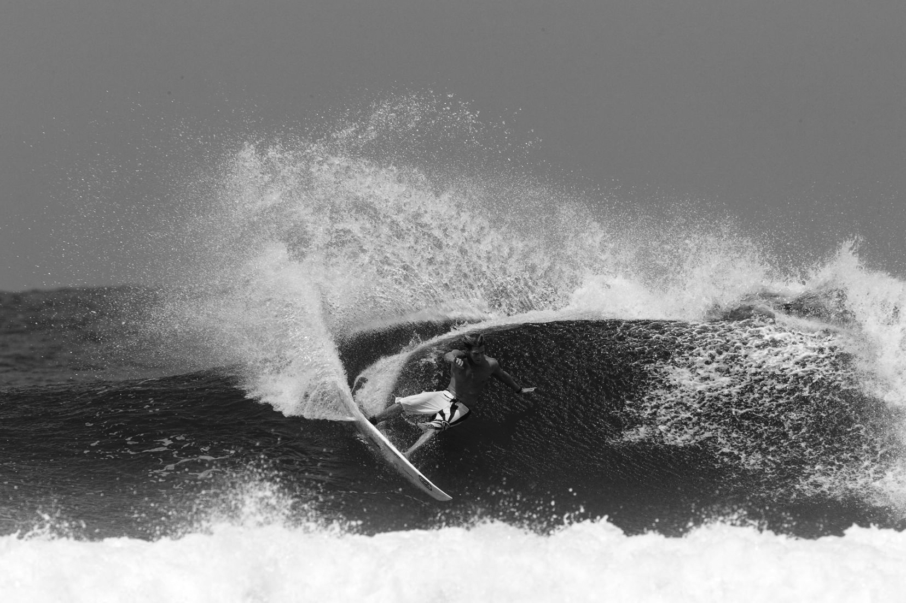
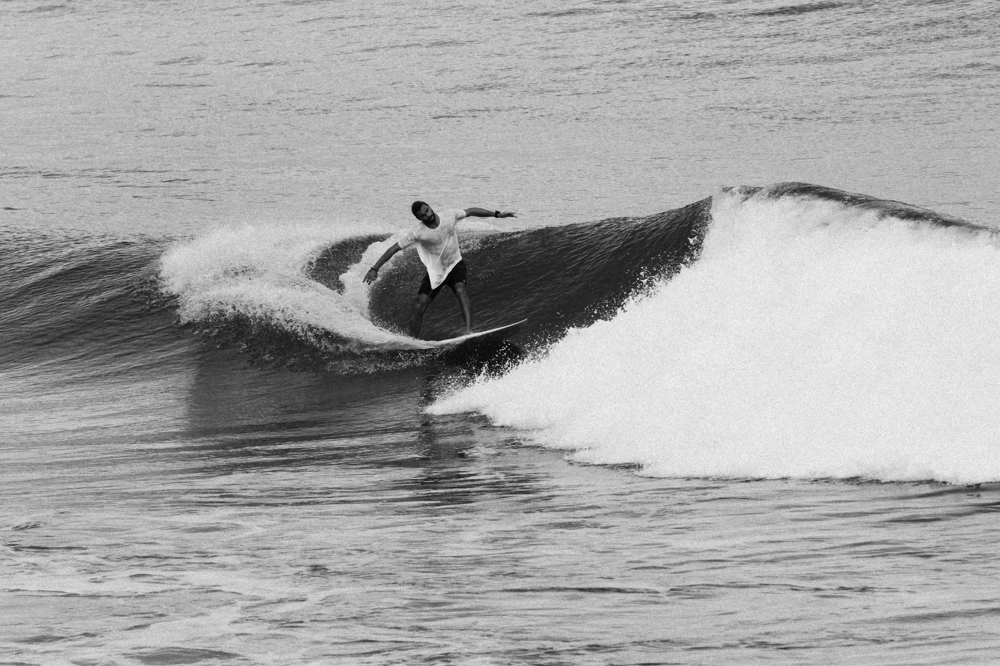
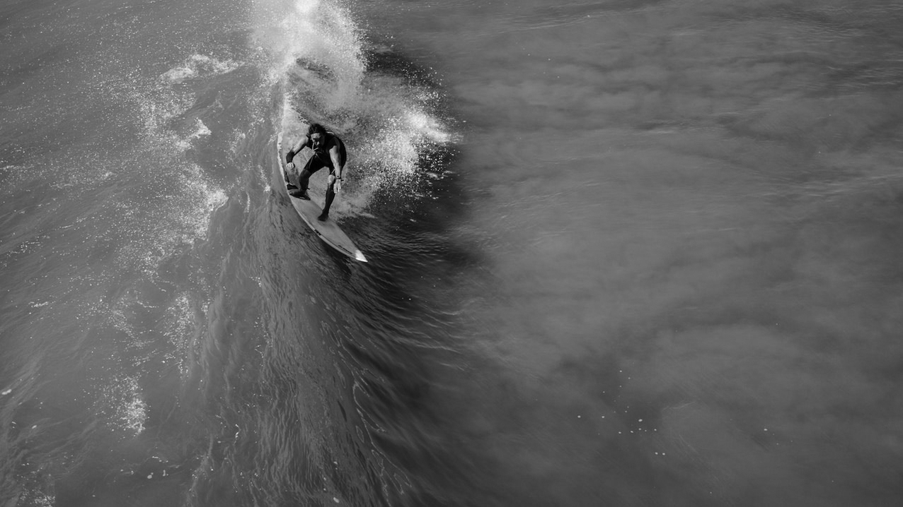
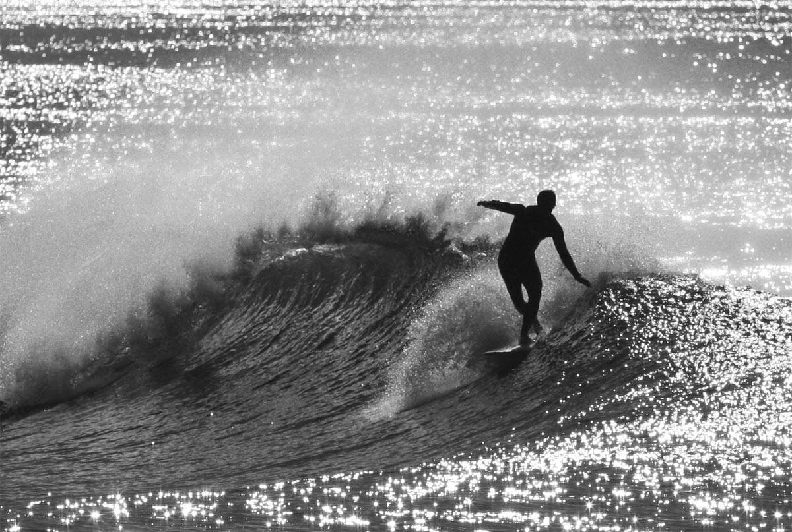
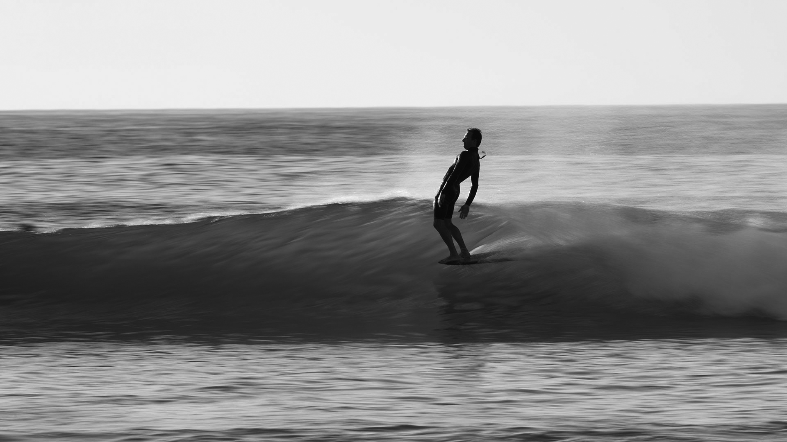
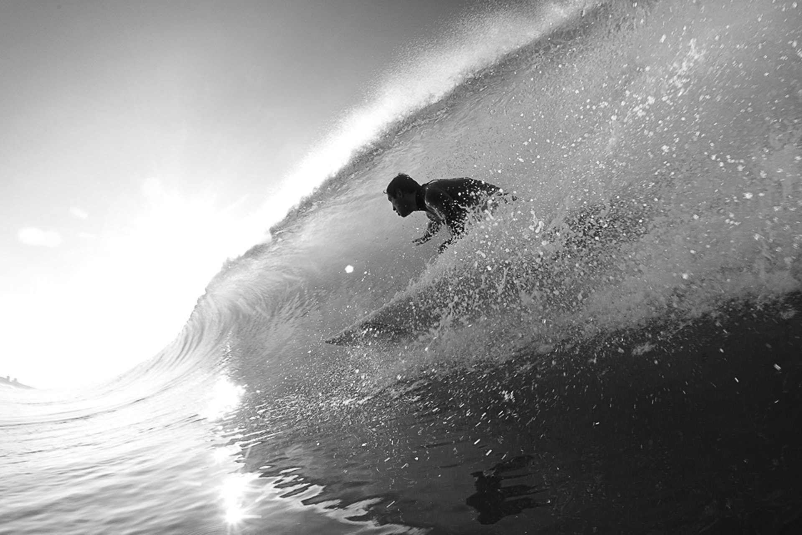

The bottom turn is the most important maneuver in surfing. For many, it represents the foundation of surf riding because it is the first turn on a wave after dropping in, and it allows you to channel the speed and momentum towards the open face ahead of you. The bottom turn is the bottom line. It is where it all begins.
Carving allows you to change your line and direction in open sections of the waves. When you carve, you put your weight and power on the surfboard's rail. In other words, you bury the rail in the water, draw an arc and stay in the curl. Variations: Carve 360
The cutback is a key maneuver in surfing. It allows you to reduce the speed with a good purpose. The movement takes the surfer back from the shoulder into the pocket of the wave and repositions him in the energy zone. Variations: Layback Cutback
The snap, also known as slash, is a radical change of trajectory in the pocket or on the top of the wave. When performed abruptly, it produces spectacular, flashy buckets of spray above the surfer. Variations: Layback Snap
The roundhouse cutback is one of the most beautiful and most popular maneuvers in surfing. It is usually performed in small waves without much wall, and it allows the surfer to return to the curl gaining maximum speed and amplitude off the top, with a figure-8 surf line.
The off-the-lip is a vertical top turn in which the surfer attacks a steep slope, projects half of his board off the wave's lip, and then drives it dramatically down towards the bottom of the wave without losing momentum.
The foam climb allows the surfer to get past a broken lip, closed out section, or whitewater, connecting two open face parts of the wave.
The floater is a classic surf trick and involves gliding horizontally over the wave's lip or foamy section that is about to break. The surfer uses speed to go over the top of a crumbling area of the wave, and not around it.
The closeout re-entry is the last chance a surfer has to perform a power turn on a closeout section of the wave.
The tail slide is a contemporary maneuver that involves letting the tail of the surfboard slide down the wave face. The key is getting the fins free of the wave by shifting the body's weight from the back foot to the front foot.
The ultimate longboard surfing move in which the surfer stands on the nose of the board while riding a wave. Variations: Hang Five, Hang Ten
The moment the surfer rides a wave in the opposite of his normal stance.
The 360 is a full rotation on the face of the wave. It can be performed either by reversing or carving. In both cases, the surfer spins down the wave. Variations: Reverse 360
The kickflip is a maneuver inspired by skateboarding, in which the surfer flips his surfboard 360 degrees along the axis that extends from the nose to the tail of the board. It was first executed by Zoltan Torkos.
The ultimate surfing trick. The barrel ride is the mother of all maneuvers in surfing; the greatest moment a surfer will ever experience. It consists of riding the hollow part of the wave, fully covered by the curl's lip. Perfect tubular waves are rare.
In surfing, an air is an aerial maneuver in which the surfer gains speed, finds a ramp, launches off the lip, flies above the wave, and lands on the face of the wave or in the flats. Variations: Air 360, Air Reverse, Backflip, 540, 720
The alley-opp is a backward aerial rotation inspired by skateboarding.
The superman is an aerial maneuver in which the surfer drives his surfboard down the line, goes up, kicks the board, projects it to the beach, grabs the rail, and reconnect before landing.